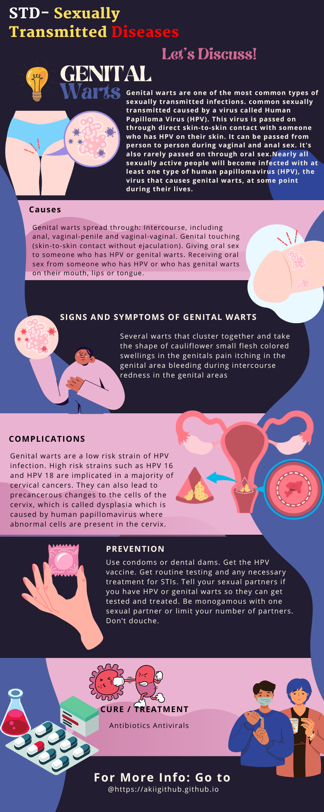

Genital warts are one of the most common types of sexually transmitted infections. common sexually transmitted caused by a virus called Human Papilloma Virus (HPV). This virus is passed on through direct skin-to-skin contact with someone who has HPV on their skin. It can be passed from person to person during vaginal and anal sex. It's also rarely passed on through oral sex.Nearly all sexually active people will become infected with at least one type of human papillomavirus (HPV), the virus that causes genital warts, at some point during their lives.
Genital warts affect the moist tissues of the genital area. They can look like small, flesh-colored bumps or have a cauliflower-like appearance. In many cases, the warts are too small to be visible. Genital warts typically appear in clusters inside and outside the vagina, the cervix and/or the anus. Male venereal warts, which are far less common, form on the penis, the scrotum and/or around the anus. The pinkish or flesh-colored growths often vanish on their own.

Certain types of HPV cause genital warts. Genital warts spread through skin-to-skin contact during sex. A different strain of HPV causes the type of warts you find on other parts of your body. You can’t get genital warts by touching yourself or someone else with a wart on your hands or feet.
Genital warts spread through:
• Intercourse, including anal, vaginal-penile and vaginal-vaginal.
• Genital touching (skin-to-skin contact without ejaculation).
• Giving oral sex to someone who has HPV or genital warts.
• Receiving oral sex from someone who has HPV or who has genital warts on their mouth, lips or tongue.
It’s important to note that you can also have the type of HPV that causes genital warts but never actually develop genital warts. This means you can pass HPV to your partner and they could develop genital warts. This is also why it can be complicated to figure out which partner gave you genital warts.
Signs and Symptoms
The size, number, and cluster of genital warts might vary.
In many cases, warts are too small to be visible. They could be flat, lumpy, or occur in clusters, and they might itch. Both men and women can get genital warts, although women are more likely to develop symptoms.
For women, they can appear on or near the vulva, cervix, inside of the vagina or anus, or outside of the vagina or anus. For men, they can appear near or on the penis, scrotum, groin, thigh, and anus. Though warts often match the color of the surrounding skin, they can appear in a variety of colors, including pink, red, brown, grey, and white.
Genital warts cause few symptoms. Symptoms typically appear 1 to 8 months following exposure.
Symptoms may include:
• Several warts that cluster together and take the shape of cauliflower
• Small flesh colored swellings in the genitals
• Pain itching in the genital area
• Bleeding during intercourse
• Redness in the genital areas
Genital warts can also manifest on the lips, mouth, tongue, and throat in both men and women if they have had sex with an infected partner. Genital warts can cause discomfort or even pain if they spread or grow larger.
It's crucial to see a nurse or doctor right away if you suspect you have genital warts.
Genital warts are a low risk strain of HPV infection.
High risk strains such as HPV 16 and HPV 18 are implicated in a majority of cervical cancers. They can also lead to precancerous changes to the cells of the cervix, which is called dysplasia which is caused by human papillomavirus where abnormal cells are present in the cervix.
TOther types of HPV may also cause cancer of the vulva. They can also cause:
1. Penile Cancer - Human papillomavirus (HPV) is one of the primary risk factors for penile cancer. HPV is believed to cause penile cancer because it produces E6 and E7 proteins, which prevent tumor suppressor genes from functioning as intended, which in turn allows cells to divide uncontrollably.
2. Anal Cancer - Most anal warts are caused by HPV-6 and HPV-11. Warts containing HPV-6 or HPV-11 are much less likely to become cancer
3. Throat Cancer - The HPV virus spreads to the oropharynx through oral sex or intimate kissing. The oropharynx, which includes the area in the back of the tongue and the tonsils, has an uneven surface with deep crevices that make it a good environment for the virus to lodge.
4. Esophageal Cancer - The results showed that 28.57% of all esophageal cancer cases were positive for the HPV L1 gene. In esophageal adenocarcinoma, six cases (17.14%) and in esophageal squamous cell carcinoma, 14 cases (40%) were positive for the HPV genome.
Prevention
If sexually active, take these steps to protect from getting or spreading HPV, genital warts and other STIs:
• Use condoms or dental dams.
• Get the HPV vaccine.
• Get routine testing and any necessary treatment for STIs.
• Tell your sexual partners if you have HPV or genital warts so they can get tested and treated.
• Be monogamous with one sexual partner or limit your number of partners.
• Don’t douche.